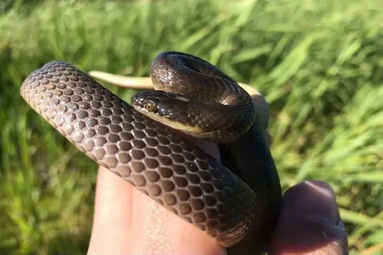
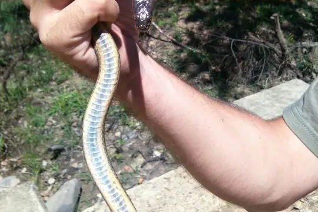
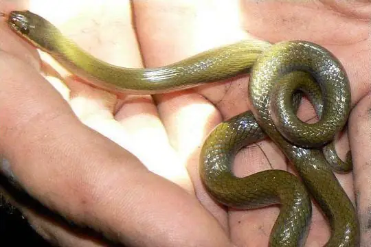
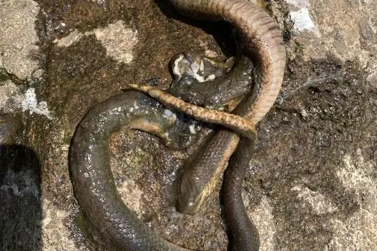

Lycodonomorphus
The genus Lycodonomorphus (family Lamprophiidae) has 9 living species in SnakeList (none venomous), recorded in 13 countries.
- 9living species
- 9non-venomous
- 13countries
About the genus
A genus of the family Lamprophiidae (lamprophiids).
Species
Showing 9 species

Brown Water Snake (rufulus)Lycodonomorphus rufulus
Dusky-bellied Water SnakeLycodonomorphus laevissimus
Floodplain Water SnakeLycodonomorphus obscuriventris- No photo yetLined Water SnakeLycodonomorphus subtaeniatus

Mlanje White-bellied Water-SnakeLycodonomorphus mlanjensis- No photo yetMulanje Water SnakeLycodonomorphus leleupi
 Olive House Snake (inornatus)Lycodonomorphus inornatus
Olive House Snake (inornatus)Lycodonomorphus inornatus Tanganyika Water SnakeLycodonomorphus bicolor
Tanganyika Water SnakeLycodonomorphus bicolor Whyte's Water SnakeLycodonomorphus whytii
Whyte's Water SnakeLycodonomorphus whytii
No snakes in Lycodonomorphus match.
About the genus Lycodonomorphus
- Distribution: living species recorded in 13 countries, on one continent: Africa.
- Family: Lamprophiidae.
- Countries and territories: Angola, Botswana, Democratic Republic of the Congo, Eswatini, Lesotho, Malawi, Mozambique, Republic of the Congo, Rwanda, South Africa, Tanzania, Zambia, Zimbabwe.
Compare its species
Its living species side by side. Lengths come only from SnakeList’s reviewed, sourced accounts; the others are left blank rather than guessed.
| Species | Venom | Recorded in | Adult length (reviewed accounts) |
|---|---|---|---|
| Brown Water Snake (rufulus) Lycodonomorphus rufulus | Non-venomous | 7 countries (Africa) | No reviewed account yet |
| Dusky-bellied Water Snake Lycodonomorphus laevissimus | Non-venomous | 1 country (Africa) | No reviewed account yet |
| Floodplain Water Snake Lycodonomorphus obscuriventris | Non-venomous | 5 countries (Africa) | No reviewed account yet |
| Lined Water Snake Lycodonomorphus subtaeniatus | Non-venomous | 3 countries (Africa) | No reviewed account yet |
| Mlanje White-bellied Water-Snake Lycodonomorphus mlanjensis | Non-venomous | 3 countries (Africa) | No reviewed account yet |
| Mulanje Water Snake Lycodonomorphus leleupi | Non-venomous | 5 countries (Africa) | No reviewed account yet |
| Olive House Snake (inornatus) Lycodonomorphus inornatus | Non-venomous | 3 countries (Africa) | No reviewed account yet |
| Tanganyika Water Snake Lycodonomorphus bicolor | Non-venomous | 5 countries (Africa) | No reviewed account yet |
| Whyte's Water Snake Lycodonomorphus whytii | Non-venomous | 2 countries (Africa) | No reviewed account yet |